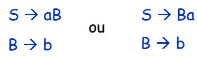

Formalismo
Na visão geral, a gramática é um formalismo projetado para a definição de linguagens em que uma gramática mostra como gerar as palavras de uma linguagem
Um elemento fundamental das gramáticas é denominado regra
Exemplo de regra:

• Qual a linguagem gerada?
• Ideia: “substituia” o símbolo que está em maiúsculo no lado direito da regra por seu significado correspondente encontrado no lado esquerdo:
• B pode ser substituído por b
• Logo a linguagem gerada é representada pela ER = ab ou ba